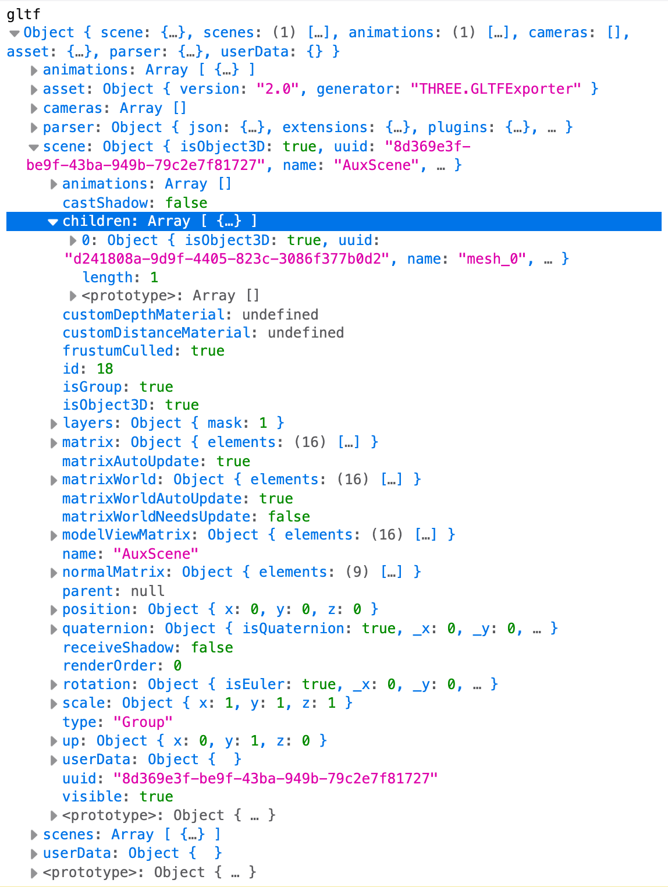

This is a simple example of how to track images in AR using Three.js and AR.js. The code is based on the AR.js library. The library is created to be used primarily with A-Frame, a beginner-friendly framework for building 3D/AR/VR experiences. But since A-Frame is built on top of Three.js the AR.js library is capable of interfacing with ThreeJS as well.
We'll start with the template described in Intro to Three JS. You can stop before Example 2, or complete the entire tutorial. Here I will assume that we're starting from the end of Example 1.
We'll start by installing the the AR.js-ThreeJS library using the npm:
npm install @ar-js-org/ar.js-threejs
You will most likely get notifications of vulnerabilities. We will ignore them for now, but with the explicit understanding that we will need to address them later, if the project is publicly deployed.
Next, we'll need to add the AR.js-ThreeJS library to our project. This can be done by importing it at the top of our main.js file, with other 'import' declarations:
import { THREEx, ARjs } from '@ar-js-org/ar.js-threejs'
Then let's set some global values that we'll use throughout our application. First we'll set up a base URL for THREEx ARjs pointing at the 'public' folder of our app; otherwise the library will try to fetch resource online and will probably fail, resulting in an error. Add this line right after the 'import' statements:
THREEx.ArToolkitContext.baseURL = "."
Also, we already have an object called 'sizes', we can continue using it, but I will rename it to 'units' to better reflect its purpose:
let units = {
width: window.innerWidth,
height: window.innerHeight,
cameraWidth: 800,
cameraHeight: 600,
cameraFOV: (0.8 * 180) / Math.PI,
cameraRatio: 800 / 600,
cameraNear: 0.01,
cameraFar: 10000
}
IMPORTANT: there are already some lines of code that use the 'sizes' object name. If you are renaming it to 'units' - please replace all instances of 'sizes' with 'units'. For more info see VS Code documentation
We will add an array to contain all the functions that need to run each time a frame is rendered:
let onRenderFunctions = []
With that we should be ready to implement the AR.js functionality.
First, we'll update the renderer to make sure the scene is rendered correctly. For more information in the specific settings for the ThreeJS renderer please see the Three.js documentation. We will replace our basic renderer declaration with a more advanced one that enables the correct settings:
//const renderer = new THREE.WebGLRenderer()
const renderer = new THREE.WebGLRenderer({
antialias: true,
alpha: true,
precision: 'mediump',
premultipliedAlpha: true,
stencil: true,
depth: true,
logarithmicDepthBuffer: true,
});
We will also set the pixel ratio to the device pixel ratio to avoid any distortions, set a clear color, enable the sRGB color space for the output and the physically correct lights, and set the size of the renderer to match our 'units' object:
renderer.setPixelRatio(window.devicePixelRatio)
renderer.setClearColor(new THREE.Color('lightgrey'), 0)
renderer.setSize(units.width, units.height)
renderer.outputEncoding = THREE.sRGBEncoding
renderer.physicallyCorrectLights = true
And finally, if you don't have it already, add the following line to append the renderer to the document body:
document.body.appendChild(renderer.domElement)
Next, we need to set up and initialize the AR Toolkit source. We'll be using a standard webcam and will determine the orientation based on the device's aspect ratio. If the code formatting looks add to you look up JavaScript ternary operators. When initializing a source we'll wait for 1 seconds to trigger a resize function. This function will run here, and any time a screen is resized. We'll create it in the next step because it will also need to adjust the context.
const arToolkitSource = new THREEx.ArToolkitSource({
sourceType : 'webcam',
sourceWidth: window.innerWidth > window.innerHeight ? units.cameraWidth : units.cameraHeight,
sourceHeight: window.innerWidth > window.innerHeight ? units.cameraHeight : units.cameraWidth
})
arToolkitSource.init(function onReady(){
// use a resize to fullscreen mobile devices
setTimeout(function() {
onResize()
}, 1000)
})
window.addEventListener('resize', function(){
onResize()
})
Time to set up the AR Toolkit context. This will load the correct camera settings and allow us to use the AR.js features within our Three.js scene. Once it's initialized we can also add our 'onResize' function.
const arToolkitContext = new THREEx.ArToolkitContext({
cameraParametersUrl: THREEx.ArToolkitContext.baseURL + '/data/camera_para.dat',
detectionMode: 'mono',
canvasWidth: units.cameraWidth,
canvasHeight: units.cameraHeight,
}, {
sourceWidth: units.cameraWidth,
sourceHeight: units.cameraHeight,
})
// initialize it
arToolkitContext.init(function onCompleted(){
// copy projection matrix to camera
camera.projectionMatrix.copy( arToolkitContext.getProjectionMatrix() )
})
function onResize(){
arToolkitSource.onResizeElement()
arToolkitSource.copyElementSizeTo(renderer.domElement)
if( arToolkitContext.arController !== null ){
arToolkitSource.copyElementSizeTo(arToolkitContext.arController.canvas)
}
}
One thing you might notice from the code above it that the AR Toolkit is being initialized with a specific camera parameters file. This file is crucial for the proper functioning of the AR features, as it contains the intrinsic parameters of the camera being used. The code expects it to be located in public/data/ folder, so we need to create this folder and add the camera parameters file there. You can download the camera parameters file from the AR.js repository or from this link.
Now that we have the AR Toolkit set up, we can start adding markers. Markers are images that the AR Toolkit will recognize and use to place 3D objects in the AR space. We can create these markers for our images using the NFT Marker Creator. Here is the GitHub repo for the NFT Marker Creator in case you'd like to run it locally.
Use the NFT Marker Creator to generate a marker for your image. Follow the instructions in the tool to upload your image and create the markers. There will be three files generated - and it might take abit of time. You will need to download the generated marker files and place them in the public/data/ folder. The example uses Mona Lisa as the tracker image, and you can use the prepared files from the example if you want to test your app with the same image.
Once the markers are ready and placed in the public/data/ folder, we need to add the Marker Controls to the code. We'll also add a couple of log events to let us know when the marker is successfully detected or lost.
const markerControls = new THREEx.ArMarkerControls(arToolkitContext, camera, {
type: 'nft',
// replace with your marker file name without extensions
descriptorsUrl: '/data/Mona_Lisa,_by_Leonardo_da_Vinci,_from_C2RMF_retouched',
changeMatrixMode: 'cameraTransformMatrix'
})
markerControls.addEventListener('markerFound', function() {
console.log('Marker found')
})
markerControls.addEventListener('markerLost', function() {
console.log('Marker lost')
})
Finally we'll create an empty root objects that will contain the components of our scene and we'll set it not to update its matrix automatically ( See for more details ). It's also helpfull to add an axesHelper to the root - it will allow us to visualize the 3D space more easily. Then hide the scene to be revealed only if the marker is found.
const root = new THREE.Object3D()
root.matrixAutoUpdate = false
const axesHelper = new THREE.AxesHelper( 500 )
root.add( axesHelper )
scene.add(root)
scene.visible = false
Now that we have the markers set up, we can add 3D objects to our scene. We already have a cube from the initial ThreeJS example, so we'll start with that.
If you don't have a cube, make sure you add these lines:
const geometry = new THREE.BoxGeometry(1, 1, 1);
const material = new THREE.MeshStandardMaterial( { color: 0x48727f } )
const cube = new THREE.Mesh(geometry, material);
We need to set the scale for the cube. You will notice from the scale value is quite large, this is because we are working with a real-world scale. Another value that I'd bring to your attention is the 'cameraFar' value in the units data object - it's set to 10000, otherwise the contens of the scene will be clipped. You might need to set it to an even larger value if you notice your scene clipping. Then we'll add the cube to the root object to make it a part of the scene.
cube.scale.set(100, 100, 100);
root.add(cube)
Then we'll tie the cube's Z position to the marker's position. This way, when the marker is detected, the cube will appear in the correct location. This will be triggered on the event that is fired when the NFT data from the marker is available.
window.addEventListener('arjs-nft-init-data', function(nft) {
const data = nft.detail
cube.position.z = -(data.height / data.dpi * 2.54 * 10)/2.0;
})
Now we'll populate the array of render functions that we created early on. This will allow us to manage the rendering process more easily. We'll also clean up some leftover code from the earlier example.
The first function we'll add will check for the AR source and context, update the context from the source, set the scene to be visible and render the scene. These are the fundamentals and we can build upon them later if needed.
onRenderFcts.push(function () {
if (!arToolkitContext || !arToolkitSource || !arToolkitSource.ready) return
// update arToolkitSource
arToolkitContext.update(arToolkitSource.domElement)
// update scene.visible if the marker is seen
scene.visible = camera.visible
renderer.render(scene, camera)
})
Another function we could add to this array is the cube rotation function to animate the cube. In our initial code these two lines are placed directly in the draw() loop, so we can just cut and paste them here.
onRenderFunctions.push(function () {
cube.rotation.x += 0.01
cube.rotation.y += 0.01
})
Our draw()function will be simplified a bit since we have moved the rendering logic into the onRenderFcts array and call it from there.
function draw() {
requestAnimationFrame( draw )
onRenderFunctions.forEach(function (renderFunction) {
renderFunction()
})
}
draw()
This is the basic example - if you try and run it now you should be able to see a rotating 3D cube tracked to your image. In the next section I will show how to add a GLTF model to the scene, and even enable its animations if the model has any. It is not fundamentally different from using GLTF models in ThreeJS in general, so if you already know how to add models you may skip it.
To add a GLTF model to the scene, we will use the GLTFLoader from Three.js. We will look inside the GLTF model data object to understand its structure and use this understanding to load and play any built-in animations.
First, we need to import the GLTFLoader at the top of our main.js file:
import { GLTFLoader } from 'three/examples/jsm/loaders/GLTFLoader.js'
Next, we will create a new instance of the GLTFLoader and load the model. We will use the load method of the GLTFLoader to load the model. The load method takes a URL to the model and a callback function that will be called when the model is loaded. It can also take an optional progress callback function. Here the model called "Flamingo" is loaded from public/models/ directory.
In the example you will find two more models you can experiment with - a spaceship and a windmill: "SF-1 WHITE GHOST - Futuristic Starfighter" by ARTEL_3D and "Vintage Windmill Animated .glb FREE Low Poly" by LordSamueliSolo both licensed under Creative Commons Attribution.
const threeGLTFLoader = new GLTFLoader()
let model
const mixers = []
threeGLTFLoader.load("models/Flamingo.glb", function (gltf) {})
We'll add some useful functionality into the callback function to handle the loaded model. In the code above we already are passing the glft object as an argument, so we can log it to the console and look what's inside. You will see that among other things it contains a scene and in there - children of the scene as an array. Our model is the 0th element in the array.

Also notice the animations array - we'll be loading our animations from there.
So - we will store the model in our model variable deal with the animations, add the model to the root of the scene and deal with the positioning of the model in the same way we did with the cube. The animation functionality will include a check for an empty or missing animations array - just in case the model does not contain any animations. Then we collect the animations and pass them into an array of mixers we prepare as AnimationMixer players and start their playback. The finished callback function will look like this:
threeGLTFLoader.load("models/Flamingo.glb", function (gltf) {
console.log('gltf', gltf)
model = gltf.scene.children[0]
if(gltf.animations && gltf.animations.length > 0) {
const animation = gltf.animations[0]
const mixer = new THREE.AnimationMixer(model)
mixers.push(mixer)
const action = mixer.clipAction(animation)
action.play()
}
root.add(model)
window.addEventListener('arjs-nft-init-data', function(nft) {
const msg = nft.detail
model.position.z = -(msg.height / msg.dpi * 2.54 * 10)/2.0 - 200;
})
})
Note that the positioning also depends on how the GLTF scene inside the file is set up, and whether your model is centered at the origin or not.
Finally, we need to add the animation update function to our onRenderFunctions array. This will allow us to update the animations on each frame render. We are using the clock to get the delta time between frames, which is necessary for smooth animation playback.
let clock = new THREE.Clock()
onRenderFunctions.push(function () {
if (mixers.length > 0) {
for (let i = 0; i < mixers.length; i++) {
mixers[i].update(clock.getDelta())
}
}
})
This should give you a good starting point for working with 3D models and animations in your AR.js application.